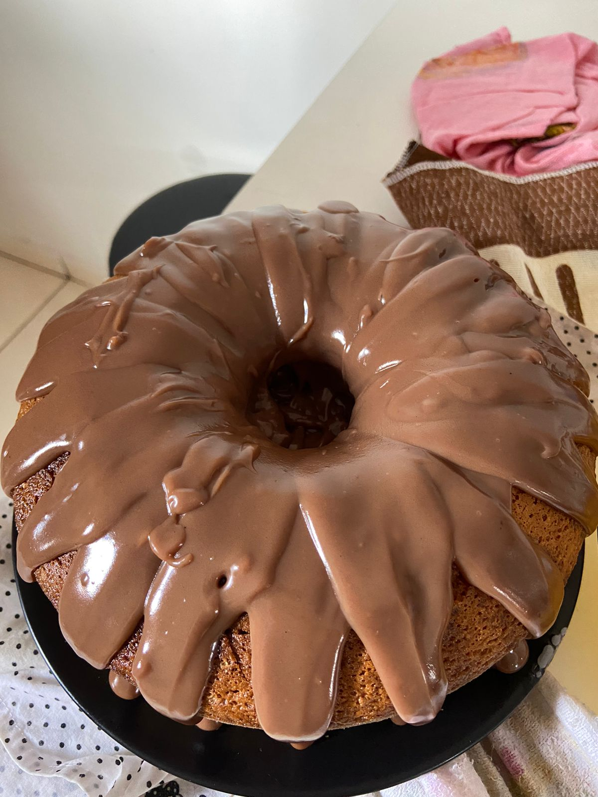

Bolo de cenoura da tia Aninha <3
Sobre mim

Igredientes
- 4 ovos
- 2 xic de açucar
- 3 cenouras pequenas
- 1/2 coco seco
- 2 1/2 xic de farinha de trigo
- 1/2 xic de óleo
- Uma tampinha de fermento
Modo de preparo
- Peneirar em um recipiente a farinha e o fermento
- No liquidificador: Bater os ovos, cenoura, açucar e óleo
- Adicionar essa mistura à farinha e fermento, até ficar homogêneo
- Assar em forno médio por 40 minutos
Voltar ao topo